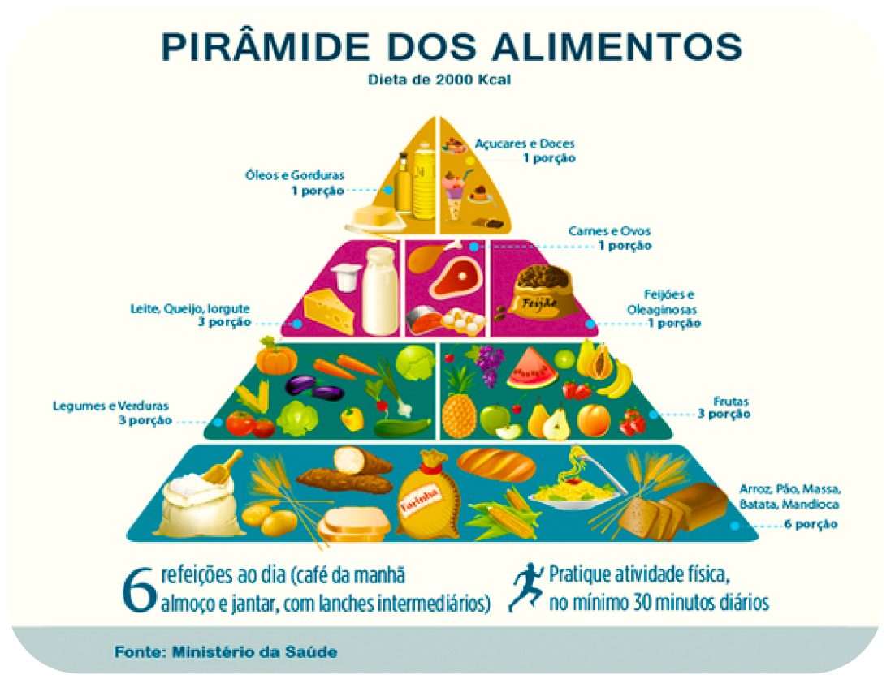
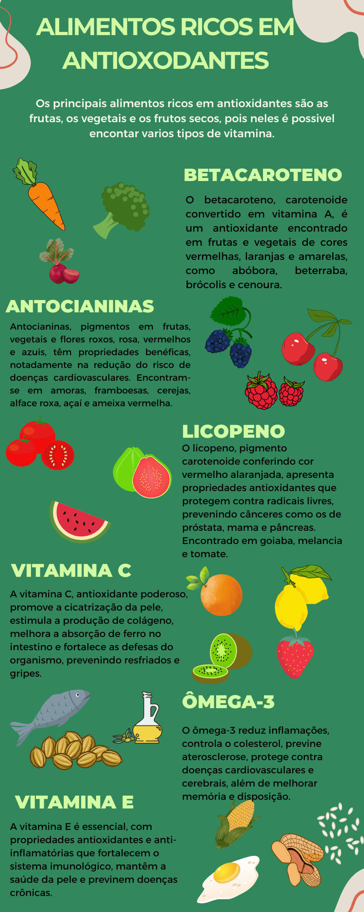

Alimentação Saudável
A alimentação saudável fornece todos os nutrientes fundamentais para o nosso corpo, como carboidratos, proteínas, vitaminas, lipídios e sais minerais. Muitos acham que carboidratos e lipídios não fazem parte de uma alimentação saudável, entretanto os carboidratos são uma das principais fontes de energia para o nosso corpo, e os lipídios atuam na formação de certos hormônios, na proteção contra choques mecânicos e no transporte de vitaminas.
A quantidade de kcal recomendada para uma pessoa ingerir por dia, depende do estado físico da pessoa, além do fator de atividade física, que pode variar de acordo com o nível de atividade. Por exemplo, uma pessoa do sexo masculino, com 1,65m de altura, deve consumir em média entre 1950 e 2900 kcal, dependendo se a pessoa é ativa ou não. Já uma pessoa do sexo feminino, com 1,65m de altura, deve consumir entre 1750 a 2650 kcal por dia.
Veja mais sobre os valores energéticos que uma pessoa deve ingerir em: Consumo diário de calorias (necessidades energéticas)
Para ter uma alimentação saudável é necessário o equilíbrio. Não podemos excluir todos os nutrientes da nossa alimentação, mas também não podemos ingerir altas quantidades de cada um deles. A pirâmide alimentar é um ótimo exemplo para isso, pois ela é uma representação gráfica que reúne informações importantes a respeito dos grupos de alimentos presentes em nossa dieta, ela informa as proporções recomendadas para consumo de cada tipo de alimento.

Veja também o infográfico sobre alimentos ricos em antioxidantes, substâncias que protegem as células e o material genético da oxidação:
Leia mais sobre esse conteúdo em: Alimentos ricos em antioxidantes
Benefícios de uma alimentação saudável
Ter uma boa alimentação trás vários benefícios para nosso organismo, como melhora na imunidade, humor, disposição, melhora qualidade de sono e regulação do intestino.
Vale lembrar que uma alimentação desequilíbrada pode ajudar no desenvolvimento da obesidade, hipertensão arterial, diabetes, doenças cardiovasculares e câncer. Ter uma boa alimentação significa ter uma boa saúde.
De acordo com o site "Opas", estes são os principais fatos sobre alimentação saudável:
• Uma alimentação saudável ajuda a proteger contra a má nutrição em todas as suas formas, bem como contra as doenças crônicas não transmissíveis (DCNT), entre elas diabetes, doenças cardiovasculares, AVC e câncer.
• Práticas alimentares saudáveis começam cedo na vida. A amamentação, por exemplo, promove crescimento e melhora o desenvolvimento cognitivo. Além disso, pode ter benefícios a longo prazo para a saúde, reduzindo o risco de obesidade e de sobrepeso, bem como de desenvolvimento de DCNT.
• A ingestão calórica deve estar em equilíbrio com o gasto calórico. Para evitar um ganho de peso não saudável, as gorduras não devem exceder 30% da ingestão calórica total (1, 2, 3).
• As gorduras saturadas devem representar menos de 10% da ingestão calórica total. O consumo de gorduras trans, por sua vez, deve ser inferior a 1% do consumo total. Para isso ser possível, o consumo de gorduras deveria ser modificado para reduzir as gorduras saturadas e trans para gorduras insaturadas (3), com o objetivo de eliminar a gordura trans produzida industrialmente (4, 5, 6).
• Limitar o consumo de açúcares livres para menos de 10% da ingestão calórica total (2, 7) faz parte de uma alimentação saudável. Uma redução adicional para menos de 5% é sugerida para benefícios adicionais à saúde (7).
• Manter o consumo diário de sal abaixo de 5g (o equivalente a menos de 2g de sódio) ajuda a prevenir a hipertensão e reduz o risco de doença cardiovascular e AVC entre a população adulta (8).
• Os Estados Membros da OMS concordaram em reduzir a ingestão de sal da população mundial em 30% até 2025. Também concordaram em deter o aumento do diabetes e da obesidade entre adultos e adolescentes, bem como o sobrepeso durante a infância até 2025 (9, 10).
Passos para ter uma alimentação saudável
O Guia Alimentar para A população Brasileira, feito pelo Ministério da Saúde, possui 10 passos para ter uma boa alimentação:
Leia mais
• Ele alerta que o consumo frequente de alimentos em sua maioria beges acelera o processo de envelhecimento do corpo e deixa o organismo mais suscetivel a doenças. "Por isso a importância dos pratos coloridos. Quanto mais cores, melhor para a saúde", afirma.
Leia mais em: Arco-íris no prato: conheça os benefícios de cada cor dos alimentos
• A ingestão média global de sal é estimada em 10,8 gramas por dia, mais que o dobro da recomendação da OMS de menos de 5 gramas de sal por dia (uma colher de chá). Consumir muito sal é o principal fator de risco para mortes relacionadas à dieta e à nutrição. Mais evidências estão surgindo documentando as ligações entre a alta ingestão de sódio e o aumento do risco de outras condições de saúde, como câncer gástrico, obesidade, osteoporose e doença renal.
Leia mais em: Grandes esforços são necessários para reduzir a ingestão de sal e proteger vidas
• Os alimentos antioxidantes servem para ajudar a prevenir doenças como o Alzheimer, câncer e doenças crônicas, além de favorecerem o bom funcionamento das células de todo o organismo ao neutralizar o efeito negativo do estresse oxidativo e dos radicais livres.
Leia mais em: Alimentos ricos em antioxidantes
• E os micronutrientes? Se engana quem pensa que o micro atribui menor importância a esse grupo. O termo tem a ver com o tamanho das suas moléculas que, de tão pequenas, não precisam ser digeridas antes de serem absorvidas pelo corpo. Diferente dos macronutrientes, que são apenas três, os micro, que correspondem às vitaminas e aos minerais, são mais numerosos.
Leia mais em: Micro e macronutrientes: aprenda a diferença entre eles e para que servem
• Os efeitos positivos da fibra alimentar estão relacionados, em parte, ao fato de que uma parcela da fermentação de seus componentes ocorre no intestino grosso, o que produz impacto sobre a velocidade do trânsito intestinal, sobre o pH do cólon e sobre a produção de subprodutos com importante função fisiológica. Indivíduos com elevado consumo de fibras parecem apresentar menor risco para o desenvolvimento de doença coronariana, hipertensão, obesidade, diabetes e câncer de cólon. O aumento na ingestão de fibras reduz os níveis séricos de colesterol, melhora a glicemia em pacientes com diabetes, reduz o peso corporal e foi associado com menores níveis séricos de proteína C reativa ultrassensível. O maior consumo de fibras e a ingestão de mais fibras do que a atualmente recomendada (14 g/1.000 kcal) poderão trazer maior benefício à saúde, incluindo a redução de processos inflamatórios de baixo grau.
Leia mais em: Fibra alimentar: ingestão adequada e efeitos sobre a saúde do metabolismo
• Como vimos, alimentos in natura são obtidos diretamente de plantas ou de animais e são adquiridos para o consumo sem que tenham sofrido qualquer alteração após deixarem a natureza.
Leia mais em: Guia Alimentar para a População Brasileira